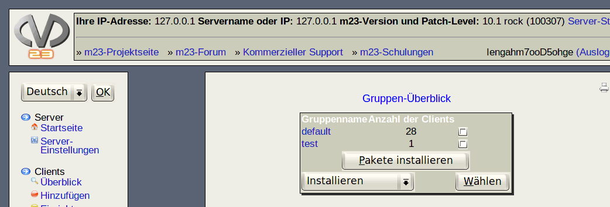

Nächste Seite:
Aufträge an eine Gruppe
Aufwärts:
Gruppenverwaltung
Vorherige Seite:
Gruppenverwaltung
Inhalt
Gruppen-Überblick
Auf dieser Seite sehen Sie Ihre Client-Gruppen und die Anzahl der jeweils darin enthaltenen Clients. Durch einen Klick auf den Gruppennamen sehen Sie die Detail-Seite der jeweiligen Gruppe.

Unterabschnitte
Aufträge an eine Gruppe übergeben
Gehen Sie dazu wie folgt vor:
root 2017-06-13